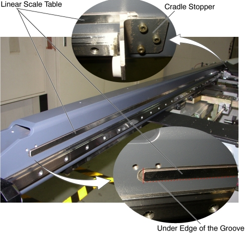

Operating Documentation
Direction 5193575-800, Rev# 5
LightSpeed 7.X Service Information - Adv
Operating Documentation |
| Required Persons | Preliminary Reqs | Procedure | Finalization |
|---|---|---|---|
| 2 |
| Last Revised: | 30 November 2006 |
| Item | Qty | Effectivity | Part# | Manufacturer | |
|---|---|---|---|---|---|
| Linear Scale Tape (5122210) | 1 | - | - | - | |
Raise the Table to maximum height.
Move the Cradle and IMS to OUT limit position.
Remove power from Table by turning off 120VAC, Axial Drive and HVDC switches on Service Switch Panel.
Remove the following Table component and covers:
Cradle
Top Cover (Right/Left)
Rear Top Cover
Rail Cover (Left)
Illustration 1: Table Covers

Peel off the linear scale tape from the groove on the inside of the Table frame, and take off the adhesive tape in that place.
Clean and dirt off the attaching surface of the groove using an alcohol.
Illustration 2: Linear Scale Tape Removal

| Do not bring magnetic objects (e.g., tools, pens, tape measures, steel-toe shoes, vacuum pumps etc.) near the linear scale tape. The linear scale tape can be damaged. | |
Peel off a paper from the new linear scale tape, and attach it along the under edge of the groove (see Illustration 2).
| NOTE: | If the front cradle stopper becomes a hindrance to attaching the linear scale tape, remove it. |
Re-install the cradle.
Power up the Table from the Service Switch Panel.
Verify that the cradle IN/OUT function is operating normally.
Turn off all 3 switches (Axial Drive, HVDC, 120VAC), and re-install the Table covers.